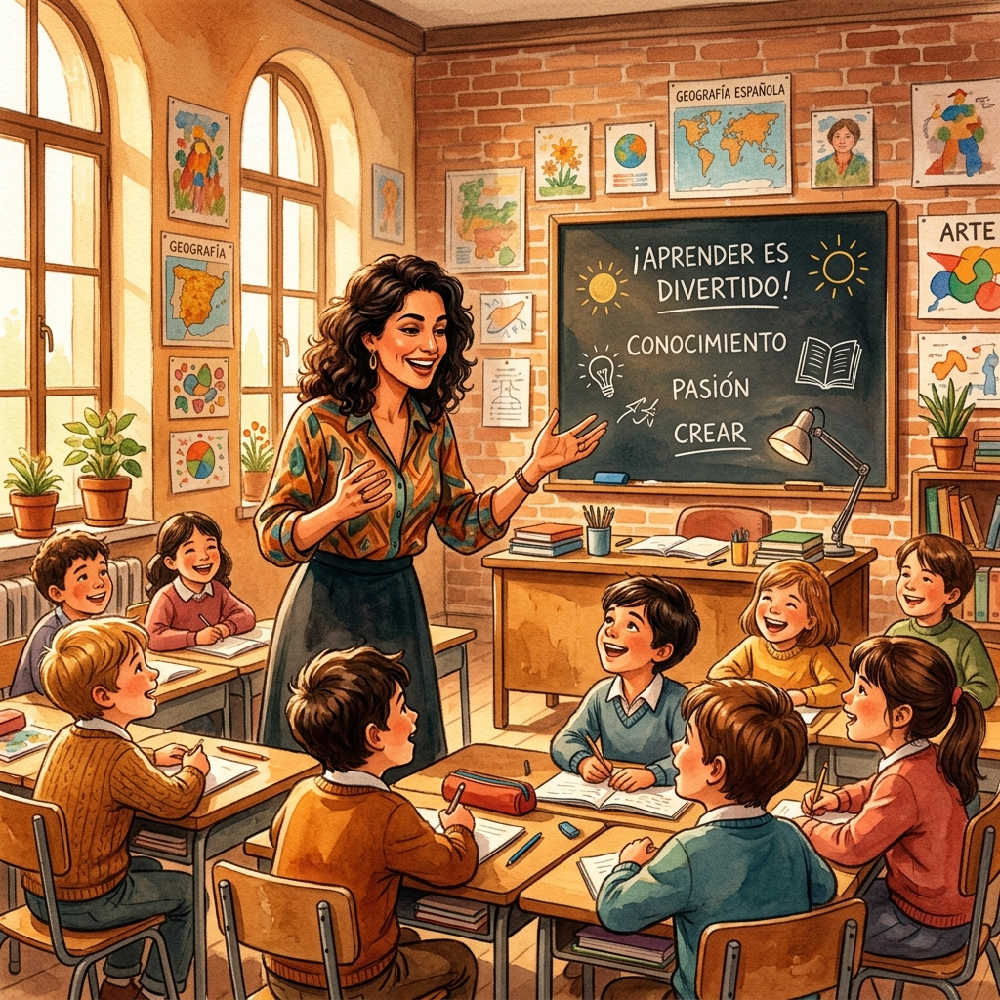

Una Funcionaria Diferente
Mari Paz Arés Osset dedicó 42 años de su vida al cuerpo de funcionarios de educación del Estado español. Pero decir simplemente que fue "funcionaria" sería como decir que Mozart simplemente "tocaba el piano". Paz transformó cada aula que habitó en un universo de posibilidades, en un espacio donde aprender era sinónimo de vivir.
En una época en la que la educación española todavía arrastraba los métodos rígidos y memorísticos heredados de décadas anteriores, Paz irrumpió con una visión radicalmente distinta: la educación debía ser un acto de amor, un despertar de la conciencia, no una simple transmisión de datos.
«Para Paz, cada alumno era un jardín esperando florecer. Su tarea no era imponer semillas, sino descubrir las que ya estaban plantadas y ayudarlas a crecer.»